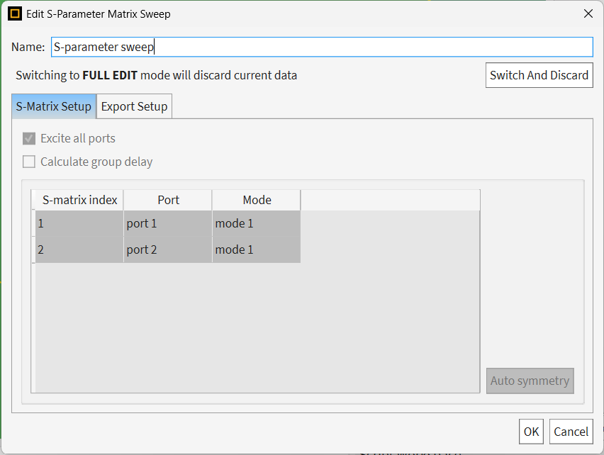
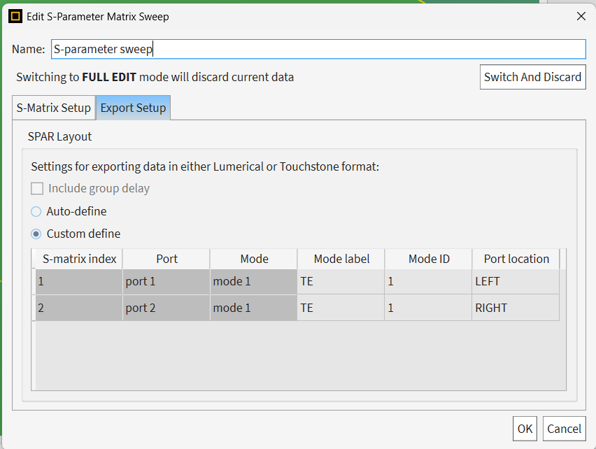
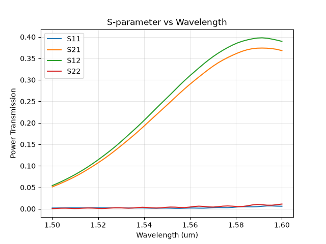
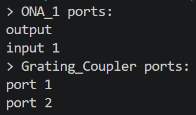
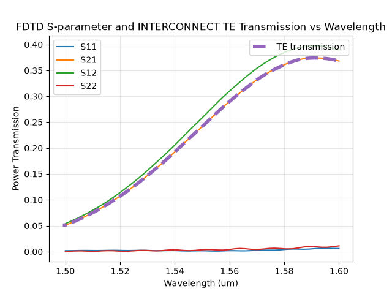

Grating Coupler: S-parameter Extraction#
Given a grating coupler design, this example demonstrates how to extract its scatter parameter using Lumerical S-Parameter Matrix Sweep, and import it into INTERCONNECT.
This example is the third part of the grating-coupler workflow:
Create a grating coupler: set up the base simulation and run it.
Optimize the grating coupler: improve the fiber position for better coupling efficiency.
Extract S-parameters: export S-parameters to INTERCONNECT.
Lumerical FDTD and Zemax Interconnect: export the field to ZBF for import into Zemax.
In this example, we will show:
How to set up S-Parameter Matrix Sweep in FDTD and export S-parameter results
How to set up INTERCONNECT circuit and import S-parameter results
Prerequisites#
A valid FDTD and INTERCONNECT license are required.
Import required modules#
[ ]:
1import matplotlib.pyplot as plt
2import numpy as np
[ ]:
3import ansys.lumerical.core as lumapi
Assign key parameters#
[ ]:
4show_GUI = True
5use_GPU_solver = True
6
7# The FDTD file can be obtained by following [Grating Coupler (2) Optimization](link).
8load_fdtd_file_path = "your/path/to/grating_coupler_optimized.fsp"
9S_parameter_export_file_path = "your/path/to/S_parameter_export.dat"
10save_itcn_file_path = "your/path/to/grating_coupler_customized.icp"
11
12# Unit conversion factors
13um_to_m = 1e-6
14m_to_um = 1e6
Set up S-Parameter Matrix Sweep inside Lumerical FDTD#
We use addsweep() command with type = 3 for S-Parameter Matrix Sweep. Please refer to here for more details.
Please use normal dictionaries {} instead of OrderedDict({}) when defining the index entries for the S-parameter mapping table, because they are treated as structs inside Lumerical.
[ ]:
15def set_up_s_parameter_sweep(fdtd, sweep_name: str) -> None:
16 """Set up an S-Parameter Matrix Sweep in the given FDTD session with the specified sweep name."""
17 # Delete the existing sweep if it exists to avoid conflicts
18 try:
19 fdtd.deletesweep(sweep_name)
20 except Exception:
21 pass
22
23 # Add S-Parameter Matrix Sweep, default name "s-parameter sweep"
24 fdtd.addsweep(3)
25 # Change the default name
26 fdtd.setsweep("s-parameter sweep", "name", sweep_name)
27
28 # Define active entries for the S-parameter mapping table
29 # Mode
30 mode1 = {"id": 1, "label": "TE"}
31 # Two ports
32 port1 = {"Port": "port 1", "Mode": "mode 1"}
33 port2 = {"Port": "port 2", "Mode": "mode 1"}
34 fdtd.addsweepparameter(sweep_name, port1)
35 fdtd.addsweepparameter(sweep_name, port2)
36
37 # Two export setup
38 export1 = {"location": "LEFT", "mode 1": mode1}
39 export2 = {"location": "RIGHT", "mode 1": mode1}
40
41 exports = {"port 1": export1, "port 2": export2}
42 fdtd.setsweep(sweep_name, "export setup", exports)
[ ]:
43# Open application, load FDTD file
44fdtd = lumapi.FDTD(hide=not show_GUI)
45fdtd.load(load_fdtd_file_path)
46
47# Set up the S-parameter sweep in FDTD
48sweep_name = "S-parameter sweep"
49set_up_s_parameter_sweep(fdtd, sweep_name=sweep_name)
If visually check the S-parameter sweep setup in FDTD GUI, you will be able to see


[ ]:
50# Run sweep
51fdtd.save()
52if use_GPU_solver:
53 fdtd.runsweep(sweep_name, "GPU")
54else:
55 fdtd.runsweep(sweep_name, "CPU")
56fdtd.save()
57
58# Extract results for visualization
59S_result = fdtd.getsweepresult(sweep_name, "S parameters")
60
61# Export S-parameter data from FDTD to a file
62fdtd.exportsweep(sweep_name, S_parameter_export_file_path, "lumerical")
63
64# Properly close the FDTD session
65if not show_GUI:
66 fdtd.close()
[ ]:
67# Visualize the S-parameter
68S_lambda_um = np.asarray(S_result["lambda"]).squeeze() * m_to_um
69S11 = np.asarray(S_result["S11"]).squeeze()
70S21 = np.asarray(S_result["S21"]).squeeze()
71S12 = np.asarray(S_result["S12"]).squeeze()
72S22 = np.asarray(S_result["S22"]).squeeze()
73
74plt.figure()
75plt.plot(S_lambda_um, np.abs(S11) ** 2, label="S11")
76plt.plot(S_lambda_um, np.abs(S21) ** 2, label="S21")
77plt.plot(S_lambda_um, np.abs(S12) ** 2, label="S12")
78plt.plot(S_lambda_um, np.abs(S22) ** 2, label="S22")
79plt.xlabel("Wavelength (um)")
80plt.ylabel("Power Transmission")
81plt.title("S-parameter vs Wavelength")
82plt.legend()
83plt.grid(alpha=0.3)
84plt.show(block=False)
85plt.pause(10)

Set up INTERCONNECT simulation#
Please refer to here for more details.
Open an INTERCONNECT session and add elements
Connect elements’ ports
Run simulation and capture the results
[ ]:
86def set_up_circuit(itcn, ana_name: str = "ONA_1", spar_name: str = "SPAR_1") -> tuple[str, str]:
87 """Set up the INTERCONNECT circuit with an Optical Network Analyzer and an S-parameter element."""
88 # === Set up elements ===
89 itcn.addelement("Optical Network Analyzer") # default name: `ONA_1`
90 itcn.setnamed("ONA_1", "name", ana_name)
91
92 itcn.addelement("Optical N Port S-Parameter") # default name: `SPAR_1`
93 itcn.setnamed("SPAR_1", "name", spar_name)
94
95 # === Set up wavelength range of the ONA ===
96 start_freq_hz = 3e8 / (np.min(S_lambda_um) * um_to_m)
97 stop_freq_hz = 3e8 / (np.max(S_lambda_um) * um_to_m)
98 itcn.setnamed(ana_name, "input parameter", "start and stop")
99 itcn.setnamed(ana_name, "start frequency", start_freq_hz)
100 itcn.setnamed(ana_name, "stop frequency", stop_freq_hz)
101
102 # === Load the S-parameter file from FDTD into the Grating Coupler element ===
103 itcn.setnamed(spar_name, "load from file", 1)
104 itcn.setnamed(spar_name, "s parameters filename", S_parameter_export_file_path)
105
106 # === (GUI only) Visually separate the two elements ===
107 if show_GUI:
108 itcn.setnamed(ana_name, "x position", 0)
109 itcn.setnamed(ana_name, "y position", 0)
110
111 itcn.setnamed(spar_name, "x position", 300) # x-positive point to the right
112 itcn.setnamed(spar_name, "y position", 200) # y-positive point down
113
114 return ana_name, spar_name
[ ]:
115# Open INTERCONNECT session and create circuit
116itcn = lumapi.INTERCONNECT(hide=not show_GUI)
117ana_name, spar_name = set_up_circuit(itcn=itcn, ana_name="ONA_1", spar_name="Grating_Coupler")
118
119# Confirm existing elements' port names
120print(f"> {ana_name} ports:")
121print(itcn.getports(ana_name))
122print(f"> {spar_name} ports:")
123print(itcn.getports(spar_name))

[ ]:
124def connect_port(itcn, component_a_name: str, a_port_name: str, component_b_name: str, b_port_name: str) -> None:
125 """Connect a port from component A to a port from component B."""
126 itcn.connect(component_a_name, a_port_name, component_b_name, b_port_name)
127
128
129# Connect ports, order not sensitive
130connect_port(itcn=itcn, component_a_name=ana_name, a_port_name="output", component_b_name=spar_name, b_port_name="port 1")
131connect_port(itcn=itcn, component_a_name=ana_name, a_port_name="input 1", component_b_name=spar_name, b_port_name="port 2")
132
133# Run simulation
134itcn.save(save_itcn_file_path)
135itcn.run()
136itcn.save(save_itcn_file_path)
137
138# Extract the simulation results for the ONA_1 component
139itcn_result = itcn.getresult("ONA_1", "input 1/mode 1/transmission")
140itcn_result_wavelength_um = np.asarray(itcn_result["wavelength"]).squeeze() * m_to_um
141itcn_result_TE_transmission = np.asarray(itcn_result["TE transmission"]).squeeze()
[ ]:
142# Plot the TE transmission as a function of wavelength
143# Duplicate old S-parameter plot
144fig, ax = plt.subplots()
145ax.plot(S_lambda_um, np.abs(S11) ** 2, label="S11")
146ax.plot(S_lambda_um, np.abs(S21) ** 2, label="S21")
147ax.plot(S_lambda_um, np.abs(S12) ** 2, label="S12")
148ax.plot(S_lambda_um, np.abs(S22) ** 2, label="S22")
149s_parameter_legend = ax.legend(loc="upper left")
150ax.add_artist(s_parameter_legend)
151
152# Plot the INTERCONNECT TE transmission on top of the S-parameter plot
153(te_line,) = ax.plot(
154 itcn_result_wavelength_um,
155 np.abs(itcn_result_TE_transmission) ** 2,
156 linestyle="--",
157 linewidth=4,
158 label="TE transmission",
159)
160ax.legend(handles=[te_line], loc="upper right")
161ax.set_xlabel("Wavelength (um)")
162ax.set_ylabel("Power Transmission")
163ax.grid(alpha=0.3)
164ax.set_title("FDTD S-parameter and INTERCONNECT TE Transmission vs Wavelength")
165plt.show(block=False)
166plt.pause(10)
[ ]:
167# Properly close the INTERCONNECT session
168if not show_GUI:
169 itcn.close()
